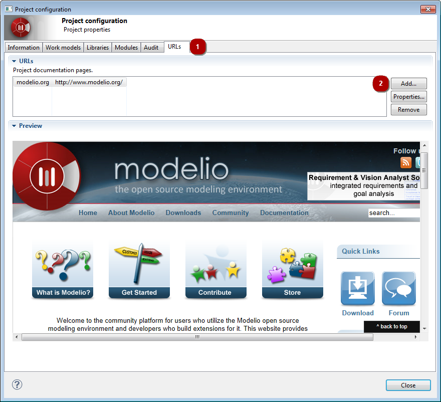

] icon in the main toolbar to open the Project configurator. Select the URLs tab in the dialog.
] icon in the main toolbar to open the Project configurator. Select the URLs tab in the dialog.- Add – add a URL to your project.
- Properties – modify an existing URL.
- Remove – remove a URL.
In Modelio 3, custom information pages can be associated with each project.
These pages are displayed in the workspace view as additional tabs.
Project custom pages can be used, for example, to display the project’s documentation, the list of anomalies to correct, the planning schedule, the state of builds or, more generally, any other information that may be useful to the developer.
Project custom pages are configured in the URL tab of the Project Configurator dialog.

] icon in the main toolbar to open the Project configurator. Select the URLs tab in the dialog.The contents of the selected URL are displayed in the preview area.